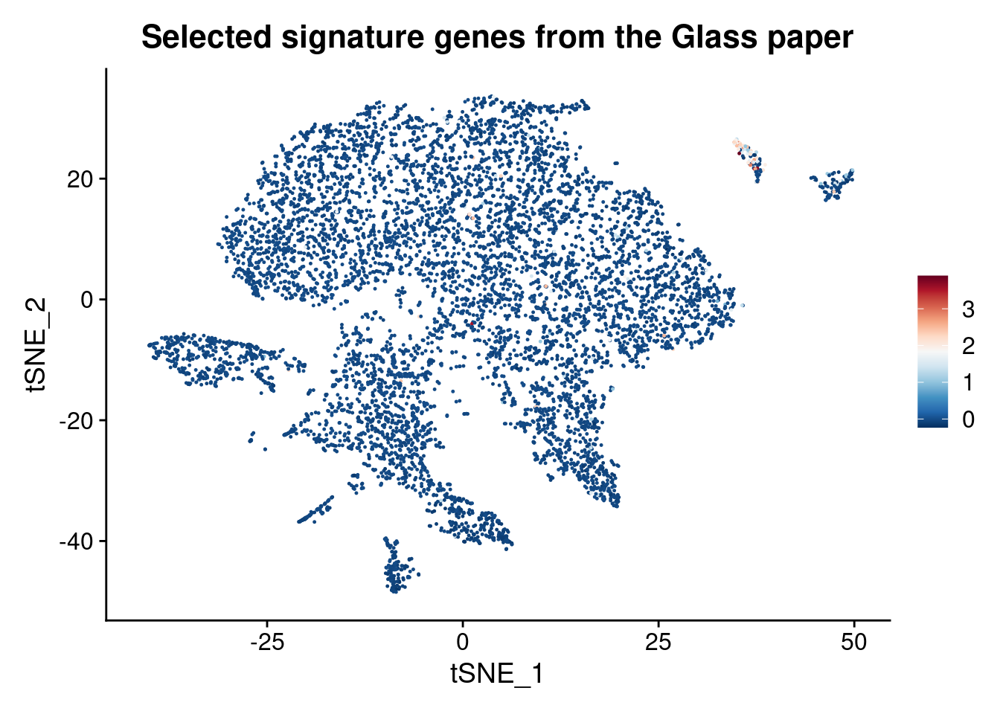

Independent_cell_type_identification_Farhadian_dataset
kmikulik
14 10 2021
Last updated: 2021-12-22
Checks: 7 0
Knit directory: report/
This reproducible R Markdown analysis was created with workflowr (version 1.6.2). The Checks tab describes the reproducibility checks that were applied when the results were created. The Past versions tab lists the development history.
Great! Since the R Markdown file has been committed to the Git repository, you know the exact version of the code that produced these results.
Great job! The global environment was empty. Objects defined in the global environment can affect the analysis in your R Markdown file in unknown ways. For reproduciblity it’s best to always run the code in an empty environment.
The command set.seed(20211203) was run prior to running the code in the R Markdown file. Setting a seed ensures that any results that rely on randomness, e.g. subsampling or permutations, are reproducible.
Great job! Recording the operating system, R version, and package versions is critical for reproducibility.
Nice! There were no cached chunks for this analysis, so you can be confident that you successfully produced the results during this run.
Great job! Using relative paths to the files within your workflowr project makes it easier to run your code on other machines.
Great! You are using Git for version control. Tracking code development and connecting the code version to the results is critical for reproducibility.
The results in this page were generated with repository version fdf25ce. See the Past versions tab to see a history of the changes made to the R Markdown and HTML files.
Note that you need to be careful to ensure that all relevant files for the analysis have been committed to Git prior to generating the results (you can use wflow_publish or wflow_git_commit). workflowr only checks the R Markdown file, but you know if there are other scripts or data files that it depends on. Below is the status of the Git repository when the results were generated:
Ignored files:
Ignored: analysis/Triculture_dataset_analysis_and_integration_Farhadian_dataset_cache/
Untracked files:
Untracked: README.html
Note that any generated files, e.g. HTML, png, CSS, etc., are not included in this status report because it is ok for generated content to have uncommitted changes.
These are the previous versions of the repository in which changes were made to the R Markdown (analysis/Independent_cell_type_identification_Farhadian_dataset.Rmd) and HTML (docs/Independent_cell_type_identification_Farhadian_dataset.html) files. If you’ve configured a remote Git repository (see ?wflow_git_remote), click on the hyperlinks in the table below to view the files as they were in that past version.
| File | Version | Author | Date | Message |
|---|---|---|---|---|
| html | 9597c36 | Katharina782 | 2021-12-21 | Build site. |
| Rmd | ea7e899 | Katharina782 | 2021-12-20 | wflow_publish(all = TRUE, republish = TRUE, delete_cache = TRUE) |
| html | 40651d9 | Katharina782 | 2021-12-20 | Build site. |
| html | 436b5c2 | Katharina782 | 2021-12-20 | Build site. |
| Rmd | f7243f8 | Katharina782 | 2021-12-20 | wflow_publish(all = TRUE, republish = TRUE, delete_cache = TRUE) |
| html | f7243f8 | Katharina782 | 2021-12-20 | wflow_publish(all = TRUE, republish = TRUE, delete_cache = TRUE) |
| html | fc8e61c | Katharina782 | 2021-12-18 | Build site. |
| html | 810aba7 | Katharina782 | 2021-12-17 | Build site. |
| Rmd | 395a31d | Katharina782 | 2021-12-17 | wflow_publish(files = rmd) |
| Rmd | e87fa96 | Katharina782 | 2021-12-16 | new files |
| html | 5db3abf | Katharina782 | 2021-12-14 | Build site. |
| Rmd | 1f25ecf | Katharina782 | 2021-12-14 | workflowr::wflow_publish(“analysis/Independent_cell_type_identification_Farhadian_dataset.Rmd”) |
| Rmd | 47b6d02 | Katharina782 | 2021-12-14 | workflowr::wflow_publish(“analysis/Independent_cell_type_identification_Farhadian_dataset.Rmd”) |
| Rmd | dde1097 | Katharina782 | 2021-12-10 | recent updates |
| html | dde1097 | Katharina782 | 2021-12-10 | recent updates |
library(RColorBrewer)
library(readxl)
library(tidyverse)
── Attaching packages ─────────────────────────────────────── tidyverse 1.3.0 ──
✓ ggplot2 3.3.5 ✓ purrr 0.3.4
✓ tibble 3.1.6 ✓ dplyr 1.0.7
✓ tidyr 1.1.2 ✓ stringr 1.4.0
✓ readr 1.4.0 ✓ forcats 0.5.0
── Conflicts ────────────────────────────────────────── tidyverse_conflicts() ──
x dplyr::filter() masks stats::filter()
x dplyr::lag() masks stats::lag()
library(Seurat)
Registered S3 method overwritten by 'spatstat.geom':
method from
print.boxx cli
Attaching SeuratObject
library(edgeR)
Loading required package: limma
library(Matrix)
Attaching package: 'Matrix'
The following objects are masked from 'package:tidyr':
expand, pack, unpack
library(data.table)
Attaching package: 'data.table'
The following objects are masked from 'package:dplyr':
between, first, last
The following object is masked from 'package:purrr':
transpose
library(ggplot2)
library(dplyr)
library(ggrepel)
library(harmony)
Loading required package: Rcpp
library(knitr)
library(pheatmap)Independent annotation of Myeloid2 and Myeloid5 clusters as Microglia-like cells
Can we identify the microglia-like myeloid2/myeloid5 cluster they found in the paper by (Shelli F. Farhadian and Spudich 2018) when using independent genes for annotations?
Here, I will first use the 881 Microglia marker genes and then also try the list of TFs provided by (David Gosselin 2020).
Function Add Module Score
This Function Caluclate the average expression levels of each cluster on single cell level, subtracted by the aggregated expression of control feature sets. The analyzed features are binned based on averaged expression and the control features are randomly selected from each bin.
read in Seurat object
hiv4 <- readRDS("/media/ag-cherrmann/kmikulik/HIV_microglia/src/Reproduce_Farhadian_Paper/Seurat_objects/non_integrated_HIV1_HIV2_4samples_seurat_object.rds")Gene signature defined by (Shelli F. Farhadian and Spudich 2018)
Do we find the 60 signature genes from (Shelli F. Farhadian and Spudich 2018) for myeloid2 among the signature defined by @[Gossselin]?
Read in list of microglia signature genes found in the Gosselin paper
which are also found in the HIV1 and HIV2 samples:
microglia_genes <- read.table("/media/ag-cherrmann/kmikulik/HIV_microglia/data/Microglia_gene_signatur_found_in_HIV1_HIV2_samples")28 of the 60 genes used as microglia signature in the (Shelli F. Farhadian and Spudich 2018) Paper are also found in the 881 microglia signature genes defined by (David Gosselin 2020).
# Are there any genes overlapping between Farhadian and Glass paper?
#import the 60 genes that were upregulated in Myeloid-2 in the paper compared to the four other myeloid subsets
paper <- read.table(file = "/media/ag-cherrmann/kmikulik/HIV_microglia/data/Myeloid-2_genes_paper.csv", sep = "\t", header = FALSE, skipNul = TRUE)#, n_max = 60)
paper[1,] <- "APOC1"
colnames(paper) <- ""
paper <- as.vector(paper[,1])
# Are there any genes overlapping between Farhadian and Glass paper?
#paper %in% as.vector(microglia_genes[["gene_name"]])
overlap <- as.vector(microglia_genes[["gene_name"]]) [as.vector(microglia_genes[["gene_name"]]) %in% paper]
length(overlap)[1] 28
overlap %>% kable()| x |
|---|
| SCIN |
| CCR5 |
| HLA-DMB |
| MSR1 |
| HAVCR2 |
| VSIG4 |
| IL18 |
| C3 |
| SLC2A5 |
| FCGBP |
| CD14 |
| OLR1 |
| TREM2 |
| FOLR2 |
| HLA-DMA |
| ZFHX3 |
| HLA-DQA1 |
| HLA-DPA1 |
| DAB2 |
| C1QC |
| C1QB |
| LYVE1 |
| CYFIP1 |
| HLA-DRB1 |
| BHLHE41 |
| MAF |
| C1QA |
| HLA-DRA |
60 genes described by Farhadian et al. to distinguish the Myeloid2 cell type
# get only genes present in the HIV1 and HIV2 samples!
paper <- paper[paper %in% rownames(hiv4@assays$RNA@counts)]
hiv_farhadian <- AddModuleScore(hiv4,
features = paper)
Idents(hiv_farhadian) <- "cell_type"
FeaturePlot(hiv_farhadian, features = "Cluster1" , pt.size = .5, label = TRUE, repel = TRUE) +
scale_colour_gradientn(colours = rev(brewer.pal(n = 11, name = "RdBu"))) +
labs(title = "Farhadian et al., 2018: Microglia signature genes")
Scale for 'colour' is already present. Adding another scale for 'colour',
which will replace the existing scale.
Gene signature defined by @[Gosselin]
The Transcription Factors mentioned in the paper do not seem to be specific for the Myeloid2 cluster. Interestingly, there is a very low score
of these microglia genes in Myeloid5, while there is a higher score in Myeloid1 and Myeloid4 cells.
gosselin_tfs <- read.table( "/media/ag-cherrmann/kmikulik/HIV_microglia/data/TFs_microglia_Glass_paper.txt")
hiv4_glass <- AddModuleScore(hiv4,
features = as.vector(gosselin_tfs))
Warning: The following features are not present in the object: MEF2B, SALL1, not
searching for symbol synonyms
Idents(hiv4_glass) <- "cell_type"
FeaturePlot(hiv4_glass, features = "Cluster1", label = TRUE, repel = TRUE, pt.size = .7) +
scale_colour_gradientn(colours = rev(brewer.pal(n = 11, name = "RdBu"))) +
labs(title = "Gosselin D. et al., 2017: Microglia Transcription Factors")
Scale for 'colour' is already present. Adding another scale for 'colour',
which will replace the existing scale.
signature of HAND (HIV-associated neurodegenerative disease)
(David Gosselin 2020) defined a group of genes upregulated in microglia from patients with HAND.
This gene signature can, however not be detected in any of the Myeloid clusters.
hand_genes <- read.table("/media/ag-cherrmann/kmikulik/HIV_microglia/data/HAND_upregulated_microglia_signature_genes")
hand_genes <- as.vector(hand_genes[["genes"]])
hiv_hand <- AddModuleScore(hiv4,
features = hand_genes)
Idents(hiv_hand) <- "cell_type"
FeaturePlot(hiv_hand, features = "Cluster1", pt.size = .01) +
scale_colour_gradientn(colours = rev(brewer.pal(n = 11, name = "RdBu"))) +
labs(title = "microglia signature genes upregulated in HAND")
Scale for 'colour' is already present. Adding another scale for 'colour',
which will replace the existing scale.
TFs downregulated in in vitro microglia
The list of TFs is derived from (David Gosselin 2020):
Comparison between microglia and primitive yolk sac macrphages:
In this paper they found:
- a subset of mRNAs was expressed in primitive yolk sac macrophages and maintained expression levels in brain microglia
- a second subset were preferentially expressed in adult mouse/human microglia -> increase in expression from ebryonic to adult stage of brain development
- a majority of the TFs that showed reduced expression after transfer to in in vitro environment were induced following migration of primitive macrophages into the developing brain -> induction by local environment factors
# TFs downregulated in in vitro microglia
tfs_down <- c( "IRF1", "IRF2", "IRF3", "IRF8", "IRF9", "CTCF", "MEF2A", "MEF2C", "MEF2D","MAF", "MAF1", "MAFB", "MAFF","MAFG", "MAFK", "RUNX1", "RUNX2", "SMAD3", "CEBPB", "CEBPA", "CEBPG", "JUND", "JUNB", "JUN", "FOS", "FOSB", "ARID3A", "ARID5A", "BHLHE41", "BTG2", "DBP", "EGR1", "EGR2", "EGR3", "ERF", "ELF1", "ELMSAN1", "ETV6", "FLI1", "KLF2", "KLF4", "KLF6", "MLXIPL", "MNT", "MYCL", "NFATC2", "NFE2L2","NR4A1", "RELA", "RREB1", "STAT3", "TAL1", "TCF4", "TFEB", "USF2", "ZEB2", "ZFHX3", "ZNF217", "ZNF691")
#map(seq.int(1:59), function(n){
# VlnPlot(hiv4, features = tfs_down[n], group.by = "cell_type")
#})
tfs_down %in% rownames(hiv4@assays$RNA@counts)
[1] TRUE TRUE TRUE TRUE TRUE TRUE TRUE TRUE TRUE TRUE TRUE TRUE TRUE TRUE TRUE
[16] TRUE TRUE TRUE TRUE TRUE TRUE TRUE TRUE TRUE TRUE TRUE TRUE TRUE TRUE TRUE
[31] TRUE TRUE TRUE TRUE TRUE TRUE TRUE TRUE TRUE TRUE TRUE TRUE TRUE TRUE TRUE
[46] TRUE TRUE TRUE TRUE TRUE TRUE TRUE TRUE TRUE TRUE TRUE TRUE TRUE TRUE
hiv_down <- AddModuleScore(hiv4,
features = tfs_down)
hiv_hand@meta.data %>% head
orig.ident nCount_RNA nFeature_RNA percent_mt RNA_snn_res.0.8
1B_CCTTTCCTGTCT HIV1_Bld 4403 1697 13.203267 6
1B_GTCGAGTCATGC HIV1_Bld 5530 2489 10.604148 8
1B_GCTCGATAGATC HIV1_Bld 6311 2329 6.147541 14
1B_GAGCGGAATGTC HIV1_Bld 5008 2256 9.982068 8
1B_AGCACTAAATGA HIV1_Bld 5477 2272 9.848623 8
1B_AAATACCTCCTT HIV1_Bld 4856 2067 11.826194 8
seurat_clusters cell_type Condition Cluster1 Cluster2
1B_CCTTTCCTGTCT 6 Tcell1 Blood -0.01185150 -0.01185150
1B_GTCGAGTCATGC 8 Myeloid1 Blood -0.05162929 -0.01032586
1B_GCTCGATAGATC 14 plasma cell Blood -0.03326784 0.00000000
1B_GAGCGGAATGTC 8 Myeloid1 Blood -0.07683537 -0.02195094
1B_AGCACTAAATGA 8 Myeloid1 Blood -0.01038798 0.00000000
1B_AAATACCTCCTT 8 Myeloid1 Blood -0.03354566 0.00000000
Cluster3 Cluster4 Cluster5 Cluster6 Cluster7
1B_CCTTTCCTGTCT -0.1711938 -0.09481203 -0.05267871 0.8129650 -0.04082721
1B_GTCGAGTCATGC 0.8367329 -0.08757767 -0.19580706 0.5080454 -0.06692596
1B_GCTCGATAGATC -0.1760869 -0.09495456 -0.05697274 -0.2900837 -0.03798182
1B_GAGCGGAATGTC -0.1528933 -0.12920008 1.02071849 0.5238480 -0.08704052
1B_AGCACTAAATGA 0.8389540 -0.07770004 -0.14459255 -0.4540580 -0.06190830
1B_AAATACCTCCTT 1.0063699 -0.08945510 -0.12887531 -0.4381535 -0.04472755
Cluster8 Cluster9 Cluster10 Cluster11 Cluster12
1B_CCTTTCCTGTCT 0.109149738 -0.2556897 -0.01185150 -0.2344179 -0.2594270
1B_GTCGAGTCATGC 1.083696302 -0.5916853 -0.05660010 -0.2198099 1.7947622
1B_GCTCGATAGATC -0.031303009 -0.4116142 -0.04747728 -0.3022513 -0.2660752
1B_GAGCGGAATGTC 0.501772959 0.5163614 -0.04390187 -0.2097841 1.4557755
1B_AGCACTAAATGA -1.144407281 0.5573299 -0.08599533 1.5305484 1.5297456
1B_AAATACCTCCTT -0.006147703 1.2222966 -0.02236378 -0.2630477 -0.2209738
Cluster13 Cluster14 Cluster15 Cluster16 Cluster17
1B_CCTTTCCTGTCT -0.10535742 -0.1917523 -0.2238725 -0.04740602 -0.06796459
1B_GTCGAGTCATGC 0.89834966 0.9024493 1.1869001 -0.10617957 -0.05660010
1B_GCTCGATAGATC -0.14572067 -0.1362252 -0.2283970 -0.07124966 -0.09824339
1B_GAGCGGAATGTC -0.13681173 0.9497430 0.8364252 -0.08193440 -0.02195094
1B_AGCACTAAATGA -0.09638331 1.3664463 0.7920274 -0.07770004 -0.10886396
1B_AAATACCTCCTT -0.09460206 0.9978417 -0.2390786 -0.11607785 -0.03354566
Cluster18 Cluster19 Cluster20 Cluster21 Cluster22
1B_CCTTTCCTGTCT -0.09481203 -0.07638172 -0.1172089 -0.3433302 -0.05925752
1B_GTCGAGTCATGC -0.06692596 -0.09585371 1.6250830 1.2799337 1.37185756
1B_GCTCGATAGATC -0.04747728 -0.01899091 -0.1077388 -0.4447810 -0.06026156
1B_GAGCGGAATGTC -0.08780374 -0.09877921 0.8864123 0.6806042 -0.07095893
1B_AGCACTAAATGA -0.10346020 -0.05692409 2.3814315 -0.4915839 1.75405936
1B_AAATACCTCCTT -0.06709133 -0.04472755 0.9566267 0.7409743 -0.10578394
Cluster23 Cluster24 Cluster25 Cluster26 Cluster27
1B_CCTTTCCTGTCT -0.2509493 -0.11851504 -1.15216148 -0.08508879 -0.2172937
1B_GTCGAGTCATGC 1.2982862 -0.17590541 0.38108650 -0.23299993 0.7424081
1B_GCTCGATAGATC -0.2140687 -0.11723430 -0.34307750 -0.12357591 0.7500735
1B_GAGCGGAATGTC 2.6422368 -0.09877921 -0.08850152 1.42995107 -0.3944558
1B_AGCACTAAATGA 2.4130680 -0.08808801 -0.23350686 1.68938237 -0.2253309
1B_AAATACCTCCTT 2.4387579 -0.04987450 -1.23274033 -0.13667593 -0.2579007
Cluster28 Cluster29 Cluster30 Cluster31 Cluster32
1B_CCTTTCCTGTCT -0.02370301 -0.1727292 -0.1012842 -0.1422180 -0.1119362
1B_GTCGAGTCATGC 0.00000000 1.8499190 -0.2276558 1.6614615 -0.2065630
1B_GCTCGATAGATC -0.01899091 -0.2021407 -0.1053900 -0.1742070 -0.2075424
1B_GAGCGGAATGTC -0.01097547 1.6176990 -0.2052651 0.9587215 0.9032500
1B_AGCACTAAATGA 0.00000000 1.7506792 0.7532265 0.8701180 -0.2597700
1B_AAATACCTCCTT -0.01118189 1.9353344 -0.1721028 -0.2493567 -0.1977323
Cluster33 Cluster34 Cluster35 Cluster36 Cluster37
1B_CCTTTCCTGTCT -0.3721854 -1.125850 -0.02897570 -0.2870966 -0.03555451
1B_GTCGAGTCATGC -0.5647451 2.737049 -0.15985868 2.7042712 -0.05162929
1B_GCTCGATAGATC 0.4933810 -1.116219 -0.05704023 -0.5267935 -0.11723430
1B_GAGCGGAATGTC -0.6183499 2.822841 -0.13094239 2.9561573 -0.05487734
1B_AGCACTAAATGA -0.4939252 3.451155 -0.11163267 1.9075026 -0.07271583
1B_AAATACCTCCTT -0.3572089 2.484923 -0.06105639 1.5958590 -0.03354566
Cluster38 Cluster39 Cluster40 Cluster41 Cluster42
1B_CCTTTCCTGTCT 0.000000000 0.13493767 -0.01185150 -1.1829772 -0.3213450
1B_GTCGAGTCATGC -0.010325858 -0.09277292 -0.05660010 0.4476676 -0.5277103
1B_GCTCGATAGATC -0.009495456 0.67305550 -0.10396532 -0.2774846 -0.4287091
1B_GAGCGGAATGTC 0.000000000 0.18601703 -0.08704052 -1.1488277 -0.4549405
1B_AGCACTAAATGA 0.000000000 -1.01032267 -0.08101112 -1.0408202 0.5870177
1B_AAATACCTCCTT 0.000000000 0.46748856 -0.03089199 -1.3687689 -0.3249921
Cluster43 Cluster44 Cluster45 Cluster46 Cluster47
1B_CCTTTCCTGTCT -0.2238725 -0.9900413 -0.4285220 -0.1982705 -0.12935038
1B_GTCGAGTCATGC -0.2982971 1.2641662 -0.4845284 1.3185883 -0.08222262
1B_GCTCGATAGATC 0.6000566 0.3007009 -0.3806861 -0.3542705 -0.04747728
1B_GAGCGGAATGTC -0.2728674 1.4044580 -0.4439579 0.4901317 -0.10388533
1B_AGCACTAAATGA -0.2231027 1.3671608 0.5616674 -0.3738313 -0.06271839
1B_AAATACCTCCTT 0.8852764 0.7487823 -0.4555017 -0.4358931 -0.06092504
Cluster48 Cluster49 Cluster50 Cluster51 Cluster52
1B_CCTTTCCTGTCT -0.02897570 -0.02370301 -0.13776750 -0.093505919 -0.4540209
1B_GTCGAGTCATGC -0.04130343 -0.06654171 0.84834007 -0.082606866 1.0113769
1B_GCTCGATAGATC -0.01899091 -0.01899091 -0.14734829 -0.009495456 -0.3771029
1B_GAGCGGAATGTC -0.04900799 -0.01097547 -0.13170561 -0.098779208 1.9882014
1B_AGCACTAAATGA -0.07229627 -0.09139910 2.21153126 0.971485482 2.7827850
1B_AAATACCTCCTT 1.03138734 -0.03869262 -0.07827321 -0.027510729 2.5344562
Cluster53 Cluster54 Cluster55 Cluster56 Cluster57
1B_CCTTTCCTGTCT -0.1409119 0.6037291 -0.3555921 -0.3491957 -0.05267871
1B_GTCGAGTCATGC 1.8946643 0.3738071 -0.5557669 -0.5430518 -0.03097757
1B_GCTCGATAGATC -0.1201293 -1.1744456 -0.3359002 -0.4263089 -0.08545910
1B_GAGCGGAATGTC -0.1266945 1.1070367 -0.5678757 -0.5849845 -0.08780374
1B_AGCACTAAATGA -0.1479036 1.1981006 -0.4946537 -0.5641671 -0.06232785
1B_AAATACCTCCTT 0.9136752 -0.1423067 -0.4513638 0.7052750 -0.04472755
Cluster58 Cluster59 Cluster60 Cluster61 Cluster62
1B_CCTTTCCTGTCT -1.1373113 0.00000000 -0.1785947 -0.2054421 -0.12378773
1B_GTCGAGTCATGC 0.7903234 -0.03594838 -0.2507875 1.7872109 -0.18304713
1B_GCTCGATAGATC 0.2474767 -0.03138141 -0.1879988 -0.3491627 -0.15960381
1B_GAGCGGAATGTC 0.4903356 1.07559582 -0.3143516 0.7502687 -0.09801599
1B_AGCACTAAATGA -1.2166026 -0.05193988 -0.2991006 -0.3409670 -0.15163427
1B_AAATACCTCCTT -1.0861159 -0.02236378 -0.1718559 -0.2390786 -0.14271087
Cluster63 Cluster64 Cluster65 Cluster66 Cluster67
1B_CCTTTCCTGTCT 0.81672117 -0.1817391 -0.2621110 0.18039554 -1.25034485
1B_GTCGAGTCATGC 1.43524033 1.1033488 1.4264031 2.21258660 1.96318860
1B_GCTCGATAGATC -1.08782855 -0.2090350 -0.3318330 -0.91974930 -0.28829958
1B_GAGCGGAATGTC -0.03249219 -0.4184202 -0.2221099 0.13565848 -0.98699721
1B_AGCACTAAATGA -0.11431323 -0.3430326 -0.2957895 0.82143600 -0.02969245
1B_AAATACCTCCTT -1.30370109 -0.2896807 -0.4075242 -0.03488195 -1.35790912
Cluster68 Cluster69 Cluster70 Cluster71 Cluster72
1B_CCTTTCCTGTCT -0.2681340 -0.03555451 -0.05267871 -1.215753 -0.1303665
1B_GTCGAGTCATGC 0.6744683 -0.04130343 0.88305300 -1.313267 2.2069444
1B_GCTCGATAGATC 0.6485413 -0.08874793 -0.15199479 0.823277 -0.3329982
1B_GAGCGGAATGTC -0.2453111 -0.05487734 1.48482841 -1.078429 1.7231933
1B_AGCACTAAATGA -0.2908231 1.50107044 1.79062705 -1.059206 2.2326691
1B_AAATACCTCCTT -0.3205915 -0.03354566 -0.12034709 -1.349252 1.7878411
Cluster73 Cluster74 Cluster75 Cluster76 Cluster77
1B_CCTTTCCTGTCT -0.2523878 1.33009093 -1.21787218 -0.11193623 -0.10535742
1B_GTCGAGTCATGC 1.5404264 0.48496090 0.48755674 -0.17018454 1.75693101
1B_GCTCGATAGATC -0.3734878 1.08436515 -0.02464803 -0.10773884 -0.14422802
1B_GAGCGGAATGTC -0.2731314 -0.01376322 -0.99466757 -0.10474360 -0.14528167
1B_AGCACTAAATGA -0.2508056 -1.17079332 0.04049850 -0.05193988 -0.16327582
1B_AAATACCTCCTT -0.3317546 -0.13631696 -1.16056259 -0.08945510 -0.04472755
Cluster78 Cluster79 Cluster80 Cluster81 Cluster82
1B_CCTTTCCTGTCT -0.02370301 -0.01185150 -0.1119362 -0.10535742 -0.05925752
1B_GTCGAGTCATGC 0.98095653 -0.05162929 -0.1908821 0.87031150 0.98095653
1B_GCTCGATAGATC -0.04747728 0.88967780 -0.1884165 -0.09980352 -0.09980352
1B_GAGCGGAATGTC -0.03292640 -0.05998346 -0.1562571 -0.16473620 0.97672156
1B_AGCACTAAATGA -0.05193988 -0.02077595 -0.2259942 -0.18225581 -0.11426773
1B_AAATACCTCCTT -0.07561954 0.00000000 0.9676773 -0.05590944 -0.06709133
Cluster83 Cluster84 Cluster85 Cluster86 Cluster87
1B_CCTTTCCTGTCT -1.1084673 -0.12906043 0.6270388 -0.07110902 0.6124116
1B_GTCGAGTCATGC 0.6994148 -0.21569028 1.7336853 -0.12352605 1.0639570
1B_GCTCGATAGATC -0.3055906 -0.09675074 -1.0324675 -0.09495456 -1.1153019
1B_GAGCGGAATGTC 0.7977828 -0.10975468 1.4463889 -0.08780374 1.6497459
1B_AGCACTAAATGA 1.0123225 -0.21909806 1.4454089 -0.08101112 1.6101716
1B_AAATACCTCCTT -1.2415499 -0.13329467 0.8322270 -0.10063699 1.3653924
Cluster88 Cluster89 Cluster90 Cluster91 Cluster92
1B_CCTTTCCTGTCT -1.0273151 -0.011851504 -0.1409119 -0.1066635 -0.1799008
1B_GTCGAGTCATGC 0.8146881 -0.046274239 0.8698062 -0.1135844 -0.1776662
1B_GCTCGATAGATC -1.0785523 -0.009495456 -0.1386578 -0.1168405 -0.1299511
1B_GAGCGGAATGTC 1.1966899 -0.021950935 0.9717105 -0.1419179 -0.1587627
1B_AGCACTAAATGA -1.0735243 -0.018683271 -0.2151749 -0.1017871 -0.1657590
1B_AAATACCTCCTT -1.0946856 -0.027510729 -0.1952390 -0.1565464 -0.1505115
Cluster93 Cluster94 Cluster95 Cluster96 Cluster97
1B_CCTTTCCTGTCT -0.02370301 -0.2602491 -0.07638172 -0.3161928 -0.2768411
1B_GTCGAGTCATGC -0.06195515 1.7903794 0.84834007 -0.5200312 0.6603221
1B_GCTCGATAGATC -0.06653568 -0.2598011 -0.18588331 -0.3497250 -0.1837700
1B_GAGCGGAATGTC -0.03803963 1.3665967 -0.24916700 1.8467934 -0.3982116
1B_AGCACTAAATGA -0.03116393 1.8657579 -0.22467074 1.6666701 -0.3214288
1B_AAATACCTCCTT -0.02236378 0.8842571 2.03757985 1.2962593 -0.1916974
Cluster98 Cluster99 Cluster100 Cluster101 Cluster102
1B_CCTTTCCTGTCT -0.01185150 -0.08823322 0 -0.08296053 -0.02360777
1B_GTCGAGTCATGC 1.00696330 0.82310180 0 -0.16482949 -0.09946586
1B_GCTCGATAGATC -0.09446986 0.76099413 0 -0.10773884 -1.17803126
1B_GAGCGGAATGTC -0.04900799 -0.16723260 0 0.95052278 -1.12727850
1B_AGCACTAAATGA -0.06232785 0.84685879 0 -0.09760171 -1.15480994
1B_AAATACCTCCTT -0.05325577 -0.20025465 0 -0.10063699 0.52139808
Cluster103 Cluster104 Cluster105 Cluster106 Cluster107
1B_CCTTTCCTGTCT -0.3352159 1.0034112 -0.2048494 -0.01185150 -1.1166494
1B_GTCGAGTCATGC -0.5544440 0.7054361 -0.2251649 -0.05162929 0.4630843
1B_GCTCGATAGATC -0.3462002 -0.2588965 -0.2028284 -0.01899091 1.5239962
1B_GAGCGGAATGTC -0.4657253 1.2053406 0.8230650 1.08657129 0.9802060
1B_AGCACTAAATGA 1.0372588 -0.2993294 0.8111012 -0.01038798 2.1795529
1B_AAATACCTCCTT 1.1307912 -0.3049902 0.8654350 -0.02236378 1.1580833
Cluster108 Cluster109 Cluster110 Cluster111 Cluster112
1B_CCTTTCCTGTCT -0.1356392 -0.02370301 1.1265450 -0.01185150 -0.1422180
1B_GTCGAGTCATGC -0.1747711 -0.01032586 1.5753559 -0.05162929 -0.1793317
1B_GCTCGATAGATC -0.1252371 0.00000000 -0.3764991 -0.03798182 -0.1140130
1B_GAGCGGAATGTC -0.2458032 0.00000000 1.3614005 1.07559582 -0.2078657
1B_AGCACTAAATGA 0.9353373 0.00000000 1.8433200 1.50605465 -0.1911287
1B_AAATACCTCCTT -0.0894551 -0.02236378 1.3860165 -0.02236378 -0.1675679
Cluster113 Cluster114 Cluster115 Cluster116 Cluster117
1B_CCTTTCCTGTCT -0.14091193 0.9235952 -0.2238725 -0.2168332 -0.08296053
1B_GTCGAGTCATGC 1.71475641 1.8398197 1.3284584 0.5823203 0.84915444
1B_GCTCGATAGATC -0.08842164 1.0385270 -0.1519948 -0.2090350 -0.09973603
1B_GAGCGGAATGTC 0.93291474 0.5923622 -0.2669909 -0.2618919 -0.11822461
1B_AGCACTAAATGA -0.20650084 -0.5321882 -0.2729386 -0.3493561 -0.09097954
1B_AAATACCTCCTT -0.19949802 0.6372349 0.9298726 -0.2344989 -0.12300076
Cluster118 Cluster119 Cluster120 Cluster121 Cluster122
1B_CCTTTCCTGTCT -1.2076899 -0.07079162 -0.2232797 -0.01185150 -0.1172089
1B_GTCGAGTCATGC -1.0517050 -1.16952251 -0.6566440 -0.04627424 2.0832844
1B_GCTCGATAGATC 1.1457948 -0.32503174 -0.4552643 -0.02848637 -0.2099750
1B_GAGCGGAATGTC 0.1729526 -1.15319221 0.5379019 -0.03042087 1.2803265
1B_AGCACTAAATGA 0.4877517 -1.07727198 -0.4140552 -0.08310380 1.6063836
1B_AAATACCTCCTT -0.1686116 -0.30483206 -0.5359407 -0.01118189 -0.2055330
Cluster123 Cluster124 Cluster125 Cluster126 Cluster127
1B_CCTTTCCTGTCT -0.4069647 -0.06453022 -0.11851504 -0.07110902 -0.2067483
1B_GTCGAGTCATGC 0.5184371 -0.06692596 -0.12888110 1.48339218 -0.3250211
1B_GCTCGATAGATC -0.3263140 -0.08074512 -0.07736605 -0.09024058 -0.3581957
1B_GAGCGGAATGTC -0.5266163 -0.10984973 -0.04900799 0.99876755 0.7964394
1B_AGCACTAAATGA -0.5333348 -0.09349178 -0.06232785 2.01817321 -0.1935984
1B_AAATACCTCCTT 0.6766841 -0.03354566 -0.13152898 -0.02751073 -0.2158269
Cluster128 Cluster129 Cluster130 Cluster131 Cluster132
1B_CCTTTCCTGTCT -0.01185150 -1.1065425 0.13435332 -0.2285524 -0.011851504
1B_GTCGAGTCATGC -0.02065172 0.4514533 -0.90143293 -0.5326558 -0.030977575
1B_GCTCGATAGATC -0.01899091 0.6326517 -1.02530694 -0.3266565 -0.009495456
1B_GAGCGGAATGTC -0.03803253 -1.2470763 0.08632263 -0.4966426 -0.010975468
1B_AGCACTAAATGA -0.01038798 -0.1481001 -0.96904150 -0.5291638 -0.010387975
1B_AAATACCTCCTT -0.03354566 -0.1361671 1.12277748 -0.4133988 0.000000000
Cluster133 Cluster134 Cluster135 Cluster136 Cluster137
1B_CCTTTCCTGTCT -0.1422180 -0.3066390 0.9731294 -0.1514573 -0.05795141
1B_GTCGAGTCATGC -0.2879912 -0.3358558 0.6525514 1.2649020 -0.09336284
1B_GCTCGATAGATC 1.5349016 -0.3265071 -0.3725806 -0.2375214 -0.07124966
1B_GAGCGGAATGTC -0.2703618 0.7824319 1.3784375 0.7452576 -0.04900799
1B_AGCACTAAATGA -0.3679807 -0.2778290 -0.2600787 0.8414663 -0.09307222
1B_AAATACCTCCTT -0.2330437 -0.2605544 -0.2303900 -0.2717363 -0.11093090
Cluster138 Cluster139 Cluster140 Cluster141 Cluster142
1B_CCTTTCCTGTCT -0.1000847 -0.09481203 -0.06453022 -0.08296053 0.00000000
1B_GTCGAGTCATGC -0.1677505 -0.19337299 0.86700627 1.77261192 -0.06195515
1B_GCTCGATAGATC -0.1757672 1.48281140 -0.05225875 -0.11401296 -0.01899091
1B_GAGCGGAATGTC -0.1621265 -0.20786572 -0.13170561 -0.09290986 -0.02195094
1B_AGCACTAAATGA -0.1894555 -0.23724522 -0.10136752 0.97646969 0.98685767
1B_AAATACCTCCTT -0.1546391 -0.16507464 -0.15903971 -0.04472755 -0.08680143
Cluster143 Cluster144 Cluster145 Cluster146 Cluster147
1B_CCTTTCCTGTCT 1.14959588 -0.1290604 0.00000000 0.9213464 0.00000000
1B_GTCGAGTCATGC -0.06692596 1.3925093 -0.01032586 0.9972166 -0.01032586
1B_GCTCGATAGATC -0.06497555 -0.1548898 -0.01899091 -0.3829489 -0.01899091
1B_GAGCGGAATGTC -0.09877921 1.4248378 -0.01097547 0.7730779 -0.02195094
1B_AGCACTAAATGA -0.12423615 -0.2279818 -0.01038798 -0.5018886 -0.02077595
1B_AAATACCTCCTT -0.03354566 -0.1771342 -0.02236378 -0.4220874 -0.04472755
Cluster148 Cluster149 Cluster150 Cluster151 Cluster152
1B_CCTTTCCTGTCT 0 -0.09481203 0.9430272 -0.08823322 -0.12064330
1B_GTCGAGTCATGC 0 -0.16270444 0.5495315 -0.17481697 -0.09546946
1B_GCTCGATAGATC 0 -0.06175421 0.1512467 -0.22504063 -0.05076611
1B_GAGCGGAATGTC 0 -0.17484426 -0.1629187 0.90585769 -0.08193440
1B_AGCACTAAATGA 0 -0.15080641 0.4550047 -0.25598639 -0.05193988
1B_AAATACCTCCTT 0 -0.09371407 0.5476277 -0.18389676 1.09067804
FeaturePlot(hiv_down, features = "Cluster1",
label = TRUE,
repel = TRUE, pt.size = .1) +
scale_colour_gradientn(colours = rev(brewer.pal(n = 11, name = "RdBu"))) +
labs(title = "TFs downregulated in in vitro microglia")
Scale for 'colour' is already present. Adding another scale for 'colour',
which will replace the existing scale.
Features identified in a paper on convergence of microglia and macrophages (Francesca Grassivaro and Martino 2018)
They identified 14 genes that are conserved in microglia throughout development, but not expressed in myeloid-derived monocytes MDM. Only in the context of neuroinflammation are the 14 genes expressed in macrophages.
tfs <- c("CRYBB1", "GARNL3", "GPR34", "LAG3", "NUAK1", "OLFML3", "RTN1", "SALL3", "SLC1A3", "SPARC", "TNFRSF17")
tfs %in% rownames(hiv4@assays$RNA@counts)
[1] TRUE TRUE TRUE TRUE TRUE TRUE TRUE TRUE TRUE TRUE TRUE
hivt <- AddModuleScore(hiv4,
features = tfs)
Idents(hivt) <- "cell_type"
FeaturePlot(hivt, features = "Cluster2",
label = TRUE,
repel = TRUE, pt.size = .1) +
scale_colour_gradientn(colours = rev(brewer.pal(n = 11, name = "RdBu"))) +
labs(title = "14 genes expressed in microglia & macrophages in neuroinfl.")
Scale for 'colour' is already present. Adding another scale for 'colour',
which will replace the existing scale.
Marker genes referred to by (Shelli F. Farhadian and Spudich 2018)
References:
Neither of these signatures shows a high score for the Myeloid2 clusters.
# upregulated in disease associated microglia (Keren-Shaul)
disease <- c("SPP1", "ITGAX", "AXL", "LILRB4", "CLEC7A", "CCL2", "CSF1")
#28 inflammatory molecules upregulated in disease associated microglia (Krasemann)
mgnd <- c("APOE", "AXL", "CCL2", "TLR2", "SPP1", "CYBB", "MSR1", "ITGAX",
"CLEC7A", "CHI3L3", "ARG1", "SIGLEC1", "CFP", "CXCL10", "ALCAM",
"FER1L3", "LILRB4", "GPX3", "GAS7", "CCRL2","CXCL16", "CXCR4",
"GPNMB", "LGALS3", "IFI202B", "CSF1", "LIRB4", "LAG3")
# only APOE, AXL and MSR1 overlap, but these are the most important genes
# remove the genes that are also used by the Farhadian Paper
mgnd <- c("CCL2", "TLR2", "SPP1", "CYBB", "ITGAX",
"CLEC7A", "CHI3L3", "ARG1", "SIGLEC1", "CFP", "CXCL10", "ALCAM",
"FER1L3", "LILRB4", "GPX3", "GAS7", "CCRL2","CXCL16", "CXCR4",
"GPNMB", "LGALS3", "IFI202B", "CSF1", "LIRB4", "LAG3")
#hiv4 <- readRDS("/media/ag-cherrmann/kmikulik/HIV_microglia/src/Reproduce_Farhadian_Paper/Seurat_objects/non_integrated_HIV1_HIV2_4samples_seurat_object.rds")
#get genes also present in the HIV samples
mgnd <- mgnd[mgnd %in% rownames(hiv4@assays$RNA@counts)]
hiv_disease <- AddModuleScore(hiv4,
features = disease)
FeaturePlot(hiv_disease, features = "Cluster1", pt.size = .01) +
scale_colour_gradientn(colours = rev(brewer.pal(n = 11, name = "RdBu"))) +
labs(title = "Keren-Shaul et al., Genes upregulated in disease-associated microglia")
Scale for 'colour' is already present. Adding another scale for 'colour',
which will replace the existing scale.
hiv_mgnd <- AddModuleScore(hiv4,
features = mgnd)
FeaturePlot(hiv_mgnd, features = "Cluster1", pt.size = .01) +
scale_colour_gradientn(colours = rev(brewer.pal(n = 11, name = "RdBu"))) +
labs(title = "Kraseman et al., 28 inflammatory genes upregulated in
disease associated microglia")
Scale for 'colour' is already present. Adding another scale for 'colour',
which will replace the existing scale.
Neither of the signature genes are very specific for the Myeloid2/5 cluster.
- The signature genes defined by (Hadas Keren-Shaul 2017) are expressed to some level in all myeloid clusters
- The signature defined by (Susanne Krasemann 2017) is also mainly expressed in the Myeloid clusters
- CD9 and SPP1 might be added to the list of microglia marker genes expressed in Myeloid2 cluster
# Keren Shaul et al. signature
DotPlot(hiv4, features = disease, group.by = "cell_type") +
coord_flip() +
theme(axis.text.x = element_text(angle = 45, vjust = 0.8, hjust=1)) +
labs(title = "Keren-Shaul et al., Genes upregulated in disease-associated microglia")
# Kraseman et al. signature
DotPlot(hiv4, features = mgnd, group.by = "cell_type") +
coord_flip() +
theme(axis.text.x = element_text(angle = 45, vjust = 0.8, hjust=1)) +
labs(title = "Kraseman et al., 28 inflammatory genes upregulated in
disease associated microglia")
# some genes that might be markers for Myeloid2
DotPlot(hiv4, features = c("CD9", "APOE", "AXL", "CTSL", "SPP1"), group.by = "cell_type") +
coord_flip() +
theme(axis.text.x = element_text(angle = 45, vjust = 0.8, hjust=1)) +
labs(title = "Genes that might be used as markers for Myeloid2")
Gene signature defined by (Ekaterina Esaulova 2020)
Homeostatic genes
- the homeostatic microglia gene signature is found in all myeloid clusters, not only in the Myeloid 2 (except for SLC2A5 which was also included in the Farhadian paper)
- NK cell cluster also exhibits high scores for this gene signature
#homeostatic microglia gene signature
microglia <- c("CX3CR1","CSF1R", "SLC2A5", "MARCKS", "P2RY13")
FeaturePlot(hiv4, features = microglia, ncol = 3)
DotPlot(hiv4, features = microglia, group.by = "cell_type") +
coord_flip() +
theme(axis.text.x = element_text(angle = 45, vjust = 0.8, hjust=1))
hivt <- AddModuleScore(hiv4, features = microglia)
Idents(hivt) <- "cell_type"
FeaturePlot(hivt, features = "Cluster1", label =TRUE, repel = TRUE, pt.size = .7) +
scale_colour_gradientn(colours = rev(brewer.pal(n = 11, name = "RdBu"))) +
labs(title = "Homeostatic microglia signature from Esaulova paper")
Scale for 'colour' is already present. Adding another scale for 'colour',
which will replace the existing scale.
Microglia-specific genes
- GPR34, TMEM119 supports the hypothesis that myeloid2 are microglia-like, since they are expressed at higher levels in the myeloid2 cluster
- they use 10 genes to discriminate microglia, four of which have not been inlcude in the Farhadian Paper: CLEC9A, TIMD4, TNFSF18, CXCL12
- the genes CLEC9A, TIMD4, TNFSF18, CXCL12 are not included in the 60 genes used by Farhadian et al., but they do not show specific expression for myeloid2 cells
# 10 genes that discriminate microglia
microglia <- c("C1QC", "C1QB", "C1QA", "TREM2", "TIMD4", "APOC1",
"APOE", "TNFSF18", "CLEC9A", "CXCL12")
#FeaturePlot(hiv4, features = microglia, ncol = 3)
#microglia %in% paper
Idents(hiv4) <- "cell_type"
# two genes whcih might support that myeloid2 cluster contains microglia-like cells
FeaturePlot(hiv4, features = c("GPR34", "TMEM119"), label = TRUE, pt.size = .7,
repel = TRUE)
DotPlot(hiv4, features = c("TMEM119", "GPR34"), group.by = "cell_type") +
coord_flip() +
theme(axis.text.x = element_text(angle = 45, vjust = 0.8, hjust=1))
# these are not inlcuded in the Farhadian gene signature
FeaturePlot(hiv4, features = c("CLEC9A", "TIMD4", "TNFSF18", "CXCL12"),
pt.size = .7, label = TRUE, repel = TRUE, ncol= 2)
Microglia in human brain
Reference: Sankowski R. et al. 2019. Mapping microglia states in the human brain through the integration of high-dimensional techniques. Nature Neuroscience. Vol 22 https://www.nature.com/articles/s41593-019-0532-y#Sec29
In the paper microglia cells were obtained through brain surgery. Microglia were defined by the core signature called “microglia signature” below. Sankowski et al. performed unsupervised clustering using Race ID3 which resulted in 9 major sublcusters of the microglia cells. The authors suggested that these subclusters represent the wide spectrum of transcriptional states in human microglia.
RaceID: RaceID is a clustering algorithm for the identification of cell types from scRNA-seq data. It was designed to work particularly well for the detection of rare cells. https://github.com/dgrun/RaceID3_StemID2_package
- The microglia signature is most pronounced in Myeloid2 cluster
- The monocyte signature is less pronounced in Myeloid2 cluster and more pronounced in the other Myeloid clsuters
- Homeostatic microglia (core signature genes expressed by all clusters in the paper) gene signature is found in all Myeloid cluster as well as NK cells, with high expression also in Myeloid2
- CSF1R and MARCKS are most highly expressed in Myeloid2
# microglia gene signature from supplementary table 3a
microglia <- c("P2RY12", "CX3CR1", "CSF1R", "TMEM119", "SLC2A5" )
# monocyte gene signature from supplementary table 3a
monocyte <- c("CCR2", "CLEC12A", "PLAC8", "FCN1", "S100A9")
# homeostatic microlgia gene siganture
homeostatic <- c("CX3CR1", "TMEM119", "CSF1R", "P2RY12",
"P2RY13","SELPLG", "MARCKS")
map(seq.int(1:3), function(n){
names <- c("microglia", "monocyte", "homeostatic")
feature_list <- list(microglia, monocyte, homeostatic)
features = feature_list[[n]]
hiv <- AddModuleScore(hiv4, features = features)
# feature plot
Idents(hiv) <- "cell_type"
FeaturePlot(hiv, features = "Cluster1", pt.size = .5, label = TRUE, repel=TRUE)+
scale_colour_gradientn(colours = rev(brewer.pal(n = 11, name = "RdBu"))) +
labs(title = paste0(names[n]," microglia gene signature"))
})
Scale for 'colour' is already present. Adding another scale for 'colour',
which will replace the existing scale.
Scale for 'colour' is already present. Adding another scale for 'colour',
which will replace the existing scale.
Scale for 'colour' is already present. Adding another scale for 'colour',
which will replace the existing scale.
[[1]]
[[2]]
[[3]]
map(seq.int(1:3), function(n){
names <- c("microglia", "monocyte", "homeostatic")
feature_list <- list(microglia, monocyte, homeostatic)
features = feature_list[[n]]
# dot plot
DotPlot(hiv4, features = features, group.by = "cell_type") +
coord_flip() +
theme(axis.text.x = element_text(angle = 45, vjust = 0.8, hjust=1)) +
labs(title = paste0(names[n]," gene signature"))
})
[[1]]
[[2]]
[[3]]
Check the clusters across the transcriptional spectrum of microglia:
Sankowski R. et al., Nature Neuroscience, 2019 defined 9 subclusters within the microglia cell population. Can we find these gene signatures in the CSF-derived Myeloid cells? This could further confirm that Myeloid2 and Myeloid5 are microglia-like cells.
- homeostatic clusters
- C2: strong expresssion of MCH-II and antiviral immunity genes (HLA-DRA, CD74, IFI44L)
- C3: high expression of microglial core genes CX3CR1, TMEM119
- antigen processing and peptide antigen presentation C6 and C7 were characterized by low expression of CX3CR1 and high expression of integrin-receptor binding protein and metabolism genes (SPP1, APOE, LPL)
- ** proinflammatory clusters:** C1, C5, C8, C9 were characterized by expression of chemokine and cytokine genes (CCL2, IL1B)
Since Cluster C2 was characterized as a homeostati microglia cluster and showed expression of MHC-II and antivrial immunity genes like IFI44L, HLA-DRA, CD74, this supports the microglia-like identity of Myeloid2 and Myeloid5. However, there is also some expression of this signature in Meloid1 and Myeloid3 which mainly originate from Blood samples and also in B cells.
There is also a high score for C5 and C8 signature genes, which are both proinflammatory gene signatures.
# get differentially expressed genes per cluster across the transcriptional
# spectrum of microglia
excel_sheets("/media/ag-cherrmann/kmikulik/HIV_microglia/data/2019_Sankowski_Mapping_microgliastates_in_the_human_brain_Supplementary_tables.xlsx")
[1] "Suppl. table 1" "Suppl. table 2" "Suppl. table 3" "Suppl. table 4"
[5] "Suppl. table 5" "Suppl. table 6" "Suppl. table 7" "Suppl. table 8"
[9] "Suppl. table 9" "Suppl. table 10" "Suppl. table 11" "Suppl. table 12"
cluster_genes <- read_excel("/media/ag-cherrmann/kmikulik/HIV_microglia/data/2019_Sankowski_Mapping_microgliastates_in_the_human_brain_Supplementary_tables.xlsx", sheet = "Suppl. table 3")
#names(microglia_sign_df) [1] <- "gene_name"
#microglia_sign <- microglia_sign_df[,"gene_name"]
# C3
cluster_list <- map(seq.int(1:8), function(n) {
names <- c("c1", "c2", "c3", "c5", "c6", "c7", "c8", "c9")
name <- names[n]
cluster <- c(1,2,3,5,6,7,8,9)
cluster_number <- cluster[n]
c <- pull(cluster_genes %>% filter(Cluster == cluster_number), GENEID)
c <- c[c %in% rownames(hiv4@assays$RNA@counts)]
cluster_list <- list(name = name, cluster = c)
})
map(seq.int(1:8), function(n){
c <- cluster_list[[n]]$cluster
name <- cluster_list[[n]]$name
hivc <- AddModuleScore(hiv4, features = c)
Idents(hivc) <- "cell_type"
FeaturePlot(hivc, features = "Cluster1", pt.size = .5, label = TRUE,
repel = TRUE) +
scale_colour_gradientn(colours = rev(brewer.pal(n = 11, name = "RdBu"))) +
labs(title = paste0("Differentially expressed genes of cluster ", name))
})
Scale for 'colour' is already present. Adding another scale for 'colour',
which will replace the existing scale.
Scale for 'colour' is already present. Adding another scale for 'colour',
which will replace the existing scale.
Scale for 'colour' is already present. Adding another scale for 'colour',
which will replace the existing scale.
Scale for 'colour' is already present. Adding another scale for 'colour',
which will replace the existing scale.
Scale for 'colour' is already present. Adding another scale for 'colour',
which will replace the existing scale.
Scale for 'colour' is already present. Adding another scale for 'colour',
which will replace the existing scale.
Scale for 'colour' is already present. Adding another scale for 'colour',
which will replace the existing scale.
Scale for 'colour' is already present. Adding another scale for 'colour',
which will replace the existing scale.
[[1]]
[[2]]
[[3]]
[[4]]
[[5]]
[[6]]
[[7]]
[[8]]
#map(seq.int(1:8), function(n){
# c <- cluster_list[[n]]$cluster
#name <- cluster_list[[n]]$name
#DotPlot(hiv4, features = c, group.by = "cell_type") +
#coord_flip() +
# theme(axis.text.x = element_text(angle = 45, vjust = 0.8, hjust=1)) +
#labs(title = paste0("Differentially expressed genes of cluster ", name))
#})Look for genes which are upregulated in Myeloid2 compared to all other Myeloid
clusters
overlap of 5 genes with Kraseman microglia -> inflammatory molecules upregulated in disease associated microglia (Krasemann)
overlap of 3 genes with disease-associated microglia (Keren-Shaul)
Sankowski signature
- 4 genes overlap with microglia signature
- zero overlap with monocyte gene signature
- 4 genes overlap with homeostatic microglia signature
Esaulova paper -> 8 of 10 genes that discriminate microglia are found upregulated in Myeloid2 cluster
Glass paper -> 132 of the microglia signature are found in the genes upregulated in Myeloid2, 28 of these are also included in the Farhadian Paper signature, 104 are new marekr genes
Idents(hiv4) <- "cell_type"
# Find Markers that distinguish My2 from the other Myeloid clusters
my2_markers <- FindMarkers(hiv4, ident.1 = "Myeloid2",
ident.2 = c("Myeloid1", "Myeloid3", "Myeloid4", "Myeloid5"))
my2_markers <- my2_markers %>% rownames_to_column(var = "gene")
# Can we find mgnd genes? (Krasemann)
my2_markers %>% filter(gene %in% mgnd & avg_log2FC > 0)
gene p_val avg_log2FC pct.1 pct.2 p_val_adj
1 SPP1 3.626442e-14 2.2989596 0.103 0.002 9.018961e-10
2 CXCL16 8.438072e-11 1.0379235 0.439 0.172 2.098549e-06
3 GPX3 3.358479e-10 0.4856146 0.112 0.010 8.352537e-06
4 CYBB 1.267019e-09 0.9216583 0.860 0.728 3.151077e-05
5 LILRB4 4.108097e-08 0.6611217 0.271 0.089 1.021684e-03
# genes in disease-assocaited microglia (Keren-Shaul)
my2_markers %>% filter(gene %in% disease & avg_log2FC > 0)
gene p_val avg_log2FC pct.1 pct.2 p_val_adj
1 AXL 7.682308e-19 1.0183192 0.252 0.029 1.910590e-14
2 SPP1 3.626442e-14 2.2989596 0.103 0.002 9.018961e-10
3 LILRB4 4.108097e-08 0.6611217 0.271 0.089 1.021684e-03
# Sankowski
# microglia gene signature
microglia <- c("P2RY12", "CX3CR1", "CSF1R", "TMEM119", "SLC2A5" )
# monocyte gene signature
monocyte <- c("CCR2", "CLEC12A", "PLAC8", "FCN1", "S100A9")
# homeostatic microlgia gene siganture
homeostatic <- c("CX3CR1", "TMEM119", "CSF1R", "P2RY12",
"P2RY13","SELPLG", "MARCKS")
my2_markers %>% filter(gene %in% microglia & avg_log2FC > 0)
gene p_val avg_log2FC pct.1 pct.2 p_val_adj
1 SLC2A5 1.038249e-50 1.3177001 0.346 0.000 2.582126e-46
2 P2RY12 1.971868e-11 0.5465335 0.140 0.015 4.904036e-07
3 CSF1R 2.060436e-11 1.2036520 0.664 0.407 5.124303e-07
4 CX3CR1 1.359952e-04 0.5885714 0.439 0.271 1.000000e+00
my2_markers %>% filter(gene %in% monocyte & avg_log2FC > 0)
[1] gene p_val avg_log2FC pct.1 pct.2 p_val_adj
<0 rows> (or 0-length row.names)
my2_markers %>% filter(gene %in% homeostatic & avg_log2FC > 0)
gene p_val avg_log2FC pct.1 pct.2 p_val_adj
1 MARCKS 3.672024e-12 1.1346931 0.664 0.363 9.132325e-08
2 P2RY12 1.971868e-11 0.5465335 0.140 0.015 4.904036e-07
3 CSF1R 2.060436e-11 1.2036520 0.664 0.407 5.124303e-07
4 CX3CR1 1.359952e-04 0.5885714 0.439 0.271 1.000000e+00
# Esaulova
# 10 genes that discriminate microglia
microglia <- c("C1QC", "C1QB", "C1QA", "TREM2", "TIMD4", "APOC1",
"APOE", "TNFSF18", "CLEC9A", "CXCL12")
# Can we find these 10 genes in the Myeloid2 upregulated genes?
my2_markers %>% filter(gene %in% microglia & avg_log2FC > 0)
gene p_val avg_log2FC pct.1 pct.2 p_val_adj
1 C1QC 1.891156e-120 4.1160497 0.794 0.002 4.703305e-116
2 C1QB 8.023728e-114 4.1322588 0.860 0.026 1.995501e-109
3 APOE 4.641643e-108 3.5767082 0.720 0.002 1.154377e-103
4 C1QA 3.455807e-92 3.1390482 0.785 0.039 8.594593e-88
5 APOC1 2.142095e-53 2.0205009 0.402 0.006 5.327391e-49
6 TREM2 1.158412e-51 1.5152244 0.374 0.003 2.880971e-47
7 TIMD4 5.003322e-18 0.5471981 0.131 0.002 1.244326e-13
8 CLEC9A 1.921500e-06 0.4152332 0.112 0.021 4.778770e-02
# Glass
# 84 of the microglia signature genes are more highly expressed in the
microglia_genes <- read.table("/media/ag-cherrmann/kmikulik/HIV_microglia/data/Microglia_gene_signatur_found_in_HIV1_HIV2_samples")
m1 <- my2_markers %>% filter(gene %in% microglia_genes [["gene_name"]] & avg_log2FC >0)
# remove the genes that were already used by the Farhadian paper
m1 <- m1[["gene"]][m1[["gene"]] %in% paper == FALSE]
hiv_new <- AddModuleScore(hiv4, features = m1)
FeaturePlot(hiv_new, features = "Cluster1") +
scale_colour_gradientn(colours = rev(brewer.pal(n = 11, name = "RdBu"))) +
labs(title = "Selected signature genes from the Glass paper")
Scale for 'colour' is already present. Adding another scale for 'colour',
which will replace the existing scale.
References
sessionInfo()
R version 4.0.2 (2020-06-22)
Platform: x86_64-pc-linux-gnu (64-bit)
Running under: CentOS Linux 7 (Core)
Matrix products: default
BLAS/LAPACK: /usr/lib64/libopenblasp-r0.3.3.so
locale:
[1] LC_CTYPE=en_US.UTF-8 LC_NUMERIC=C
[3] LC_TIME=en_US.UTF-8 LC_COLLATE=en_US.UTF-8
[5] LC_MONETARY=en_US.UTF-8 LC_MESSAGES=en_US.UTF-8
[7] LC_PAPER=en_US.UTF-8 LC_NAME=C
[9] LC_ADDRESS=C LC_TELEPHONE=C
[11] LC_MEASUREMENT=en_US.UTF-8 LC_IDENTIFICATION=C
attached base packages:
[1] stats graphics grDevices utils datasets methods base
other attached packages:
[1] pheatmap_1.0.12 knitr_1.30 harmony_0.1.0 Rcpp_1.0.7
[5] ggrepel_0.9.1 data.table_1.14.2 Matrix_1.3-4 edgeR_3.32.0
[9] limma_3.46.0 SeuratObject_4.0.3 Seurat_4.0.5 forcats_0.5.0
[13] stringr_1.4.0 dplyr_1.0.7 purrr_0.3.4 readr_1.4.0
[17] tidyr_1.1.2 tibble_3.1.6 ggplot2_3.3.5 tidyverse_1.3.0
[21] readxl_1.3.1 RColorBrewer_1.1-2 workflowr_1.6.2
loaded via a namespace (and not attached):
[1] backports_1.2.0 plyr_1.8.6 igraph_1.2.9
[4] lazyeval_0.2.2 splines_4.0.2 listenv_0.8.0
[7] scattermore_0.7 digest_0.6.29 htmltools_0.5.2
[10] fansi_0.5.0 magrittr_2.0.1 tensor_1.5
[13] cluster_2.1.0 ROCR_1.0-11 globals_0.14.0
[16] modelr_0.1.8 matrixStats_0.61.0 spatstat.sparse_2.0-0
[19] colorspace_2.0-2 rvest_0.3.6 haven_2.3.1
[22] xfun_0.29 crayon_1.4.2 jsonlite_1.7.2
[25] spatstat.data_2.1-0 survival_3.2-7 zoo_1.8-9
[28] glue_1.6.0 polyclip_1.10-0 gtable_0.3.0
[31] leiden_0.3.5 future.apply_1.8.1 abind_1.4-5
[34] scales_1.1.1 DBI_1.1.1 miniUI_0.1.1.1
[37] viridisLite_0.4.0 xtable_1.8-4 reticulate_1.22
[40] spatstat.core_2.3-1 htmlwidgets_1.5.4 httr_1.4.2
[43] ellipsis_0.3.2 ica_1.0-2 farver_2.1.0
[46] pkgconfig_2.0.3 uwot_0.1.10 dbplyr_2.0.0
[49] deldir_1.0-6 locfit_1.5-9.4 utf8_1.2.2
[52] labeling_0.4.2 tidyselect_1.1.1 rlang_0.4.12
[55] reshape2_1.4.4 later_1.3.0 munsell_0.5.0
[58] cellranger_1.1.0 tools_4.0.2 cli_3.1.0
[61] generics_0.1.1 broom_0.7.2 ggridges_0.5.2
[64] evaluate_0.14 fastmap_1.1.0 yaml_2.2.1
[67] goftest_1.2-3 fs_1.5.1 fitdistrplus_1.1-6
[70] RANN_2.6.1 pbapply_1.5-0 future_1.23.0
[73] nlme_3.1-150 whisker_0.4 mime_0.12
[76] xml2_1.3.2 compiler_4.0.2 rstudioapi_0.13
[79] plotly_4.9.2.1 png_0.1-7 spatstat.utils_2.2-0
[82] reprex_0.3.0 stringi_1.7.6 highr_0.8
[85] lattice_0.20-41 vctrs_0.3.8 pillar_1.6.4
[88] lifecycle_1.0.1 spatstat.geom_2.3-0 lmtest_0.9-39
[91] RcppAnnoy_0.0.19 cowplot_1.1.1 irlba_2.3.3
[94] httpuv_1.6.3 patchwork_1.1.1 R6_2.5.1
[97] promises_1.2.0.1 KernSmooth_2.23-18 gridExtra_2.3
[100] parallelly_1.29.0 codetools_0.2-18 MASS_7.3-53
[103] assertthat_0.2.1 rprojroot_2.0.2 withr_2.4.3
[106] sctransform_0.3.2 mgcv_1.8-33 parallel_4.0.2
[109] hms_1.1.1 grid_4.0.2 rpart_4.1-15
[112] rmarkdown_2.6 Rtsne_0.15 git2r_0.27.1
[115] shiny_1.7.1 lubridate_1.7.9.2